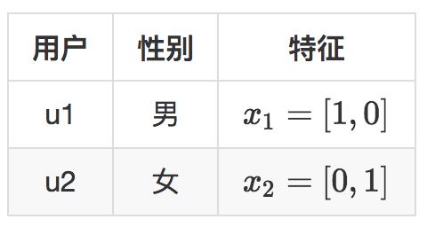
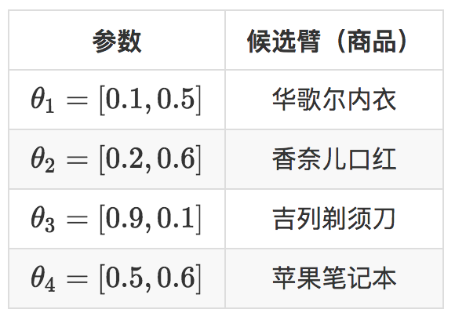

- 00 开篇词 用知识去对抗技术不平等.md.html
- 01 你真的需要个性化推荐系统吗_.md.html
- 02 个性化推荐系统有哪些绕不开的经典问题？.md.html
- 03 这些你必须应该具备的思维模式.md.html
- 04 画鬼容易画人难：用户画像的“能”和“不能”.md.html
- 05 从文本到用户画像有多远.md.html
- 06 超越标签的内容推荐系统.md.html
- 07 人以群分，你是什么人就看到什么世界.md.html
- 08 解密“看了又看”和“买了又买”.md.html
- 09 协同过滤中的相似度计算方法有哪些.md.html
- 10 那些在Netflix Prize中大放异彩的推荐算法.md.html
- 11 Facebook是怎么为十亿人互相推荐好友的.md.html
- 12 如果关注排序效果，那么这个模型可以帮到你.md.html
- 13 经典模型融合办法：线性模型和树模型的组合拳.md.html
- 14 一网打尽协同过滤、矩阵分解和线性模型.md.html
- 15 深度和宽度兼具的融合模型 Wide and Deep.md.html
- 16 简单却有效的Bandit算法.md.html
- 17 结合上下文信息的Bandit算法.md.html
- 18 如何将Bandit算法与协同过滤结合使用.md.html
- 19 深度学习在推荐系统中的应用有哪些_.md.html
- 20 用RNN构建个性化音乐播单.md.html
- 21 构建一个科学的排行榜体系.md.html
- 22 实用的加权采样算法.md.html
- 23 推荐候选池的去重策略.md.html
- 24 典型的信息流架构是什么样的.md.html
- 25 Netflix个性化推荐架构.md.html
- 26 总览推荐架构和搜索、广告的关系.md.html
- 27 巧妇难为无米之炊：数据采集关键要素.md.html
- 28 让你的推荐系统反应更快：实时推荐.md.html
- 29 让数据驱动落地，你需要一个实验平台.md.html
- 30 推荐系统服务化、存储选型及API设计.md.html
- 31 推荐系统的测试方法及常用指标介绍.md.html
- 32 道高一尺魔高一丈：推荐系统的攻防.md.html
- 33 和推荐系统有关的开源工具及框架介绍.md.html
- 34 推荐系统在互联网产品商业链条中的地位.md.html
- 35 说说信息流的前世今生.md.html
- 36 组建推荐团队及工程师的学习路径.md.html
- 加餐 推荐系统的参考阅读.md.html
- 结束语 遇“荐”之后，江湖再见.md.html
- 捐赠
17 结合上下文信息的Bandit算法
上一篇文章我说到，Bandit算法用的是一种走一步看一步的思路，这一点看上去非常佛系，似乎一点都不如机器学习深度学习那样厚德载物，但是且慢下结论，先看看我在前面介绍的那几个Bandit算法。
UCB回顾
这些Bandit算法，都有一个特点：完全没有使用候选臂的特征信息。特征可是机器学习的核心要素，也是机器学习泛化推广的依赖要素。
没有使用特征信息的Bandit算法，问题就在于只能对当前已有的这些候选臂进行选择，对于新加入的候选只能从0开始积累数据，而不能借助已有的候选泛化作用。
举个例子，假如有一个用户是鹿晗的粉丝，通过Bandit算法有两个鹿晗的广告得到展示，并得到了较好的收益。
那么对于一个新的广告，如果具有鹿晗这个特征，直觉上前两个鹿晗广告的收益信息可以泛化到当前新广告上，新广告就不是完全从0开始积累数据，而是有了一定的基础，这样的收敛会更快。
UCB和汤普森采样这两个Bandit算法在实际中表现很好。于是，前辈们就决定送UCB去深造一下，让它能够从候选臂的特征信息中学到一些知识。
UCB就是置信上边界的简称，所以UCB这个名字就反映了它的全部思想。置信区间可以简单直观地理解为不确定性的程度，区间越宽，越不确定，反之就很确定。
- 每个候选的回报均值都有个置信区间，随着试验次数增加，置信区间会变窄，相当于逐渐确定了到底是回报丰厚还是亏了。
- 每次选择前，都根据已经试验的结果重新估计每个候选的均值及置信区间。
- 选择置信区间上界最大的那个候选。
“选择置信区间上界最大的那个候选”，这句话反映了几个意思：
- 如果候选的收益置信区间很宽，相当于被选次数很少，还不确定，那么它会倾向于被多次选择，这个是算法冒风险的部分；
- 如果候选的置信区间很窄，相当于被选次数很多，比较确定其好坏了，那么均值大的倾向于被多次选择，这个是算法保守稳妥的部分；
- UCB是一种乐观冒险的算法，它每次选择前根据置信区间上界排序，反之如果是悲观保守的做法，可以选择置信区间下界排序。
LinUCB
“Yahoo!”的科学家们在2010年基于UCB提出了LinUCB算法，它和传统的UCB算法相比，最大的改进就是加入了特征信息，每次估算每个候选的置信区间，不再仅仅是根据实验，而是根据特征信息来估算，这一点就非常的“机器学习”了。
在广告推荐领域，每一个选择的样本，由用户和物品一起构成，用户特征，物品特征，其他上下文特征共同表示出这个选择，把这些特征用来估计这个选择的预期收益和预期收益的置信区间，就是LinUCB要做的事情。
LinUCB算法做了一个假设：一个物品被选择后推送给一个用户，其收益和特征之间呈线性关系。在具体原理上，LinUCB有一个简单版本以及一个高级版本。简单版本其实就是让每一个候选臂之间完全互相无关，参数不共享。高级版本就是候选臂之间共享一部分参数。
先从简单版本讲起。
还是举个例子，假设现在两个用户，用户有一个特征就是性别，性别特征有两个维度，男，女。现在有四个商品要推荐给这两个用户，示意如下。

两个用户就是Bandit算法要面对的上下文，表示成特征就是下面的样子。

每一次推荐时，用特征和每一个候选臂的参数去预估它的预期收益和置信区间。
\(x_{i}\\times\\theta_{j}\)，这就是给男性用户推荐剃须刀，给女性用户推荐口红，即使是新用户，也可以作出比随机猜测好的推荐，再观察用户是否会点击，用点击信息去更新那个被推荐了的候选臂的参数。
这里的例子还简化了一个地方，就是没有计算置信区间，这是UCB的精髓。下面来补上。
假如D是候选臂在m次被选择中积累的特征，相当于就是m条样本，特征维度是d，所以D是一个矩阵，维度是m x d。
这m次被选择，每次得到用户的点击或者没点击，把这个反馈信息记录为一个m x 1的向量，叫做C。所以这个候选臂对应的参数就是d x 1的向量，d就是特征维度数，记录为一个戴帽子的西塔，\(\\hat{\\theta}\)。
按照LinUCB认为，参数和特征之间线性相乘就应该得到收益：
\[D_{m \\times d} \\times \\hat{\\theta_{d \\times 1}} = C_{m \\times 1}\]
- 你看D也知道，C也知道，要求 \(\\theta\) ，这就很简单了。
\[ \\hat{\\theta}_{d \\times 1} = (D_{m \\times d}^{T})^{-1} C_{m \\times 1}\]
但是由于数据稀疏，实际上求参数西塔时不会这样简单粗暴，而是采用岭回归的方法，给原始特征矩阵加上一个单位对角矩阵后再参与计算：
\[ \\hat{\\theta}_{d \\times 1} = (D_{m \\times d}^{T}D_{m \\times d} + I_{d \\times d})^{-1}D_{m \\times d}^{T}C_{m \\times 1}\]
每一个候选臂都像这样去更新它的参数，同时，得到参数后，在真正做选择时，用面对上下文的特征和候选臂的参数一起。
除了估算期望收益，还要计算置信区间的上边界，如果x是上下文特征，则期望收益和置信上边界的计算方法分别是下面的样子。
期望收益：
\[\\hat{r} = x^{T}_{d \\times 1}\\hat{\\theta}_ {d \\times1 }\]
置信区间上边界：
\[\\hat{b} = \\alpha \\sqrt{x^{T}_{d \\times 1}(D_{m \\times d}^{T}D_{m \\times d} + I_{d \\times d})^{-1}x_{d \\times 1}}\]
这两个计算结果都是标量数值。置信区间计算公式虽然看起来复杂，实际上反应的思想也很直观，随着被选择次数的增加，也就是m增加，这个置信上边界是越来越小的。
每一次选择时给每一个候选臂都计算这两个值，相加之后选择最大那个候选臂输出，就是LinUCB了。
刚才说到了岭回归（ridge regression），这里多说一句，岭回归主要用于当样本数小于特征数时，对回归参数进行修正。对于加了特征的Bandit问题，正好符合这个特点：试验次数（样本）少于特征数。
信息量有点大，我在这里再一次列出LinUCB的重点。
- LinUCB不再是上下文无关地，像盲人摸象一样从候选臂中去选择了，而是要考虑上下文因素，比如是用户特征、物品特征和场景特征一起考虑。
- 每一个候选臂针对这些特征各自维护一个参数向量，各自更新，互不干扰。
- 每次选择时用各自的参数去计算期望收益和置信区间，然后按照置信区间上边界最大的输出结果。
- 观察用户的反馈，简单说就是“是否点击”，将观察的结果返回，结合对应的特征，按照刚才给出的公式，去重新计算这个候选臂的参数。
当LinUCB的特征向量始终取1，每个候选臂的参数是收益均值的时候，LinUCB就是UCB。
说完简单版的LinUCB，再看看高级版的LinUCB。与简单版的相比，就是认为有一部分特征对应的参数是在所有候选臂之间共享的，所谓共享，也就是无论是哪个候选臂被选中，都会去更新这部分参数。
构建特征
LinUCB算法有一个很重要的步骤，就是给用户和物品构建特征，也就是刻画上下文。
在“Yahoo！”的应用中，物品是文章。它对特征做了一些工程化的处理，这里稍微讲一下，可供实际应用时参考借鉴。
首先，原始用户特征有下面几个。
- 人口统计学：性别特征（2类），年龄特征（离散成10个区间）。
- 地域信息：遍布全球的大都市，美国各个州。
- 行为类别：代表用户历史行为的1000个类别取值。
其次，原始文章特征有：
- URL类别：根据文章来源分成了几十个类别。
- 编辑打标签：编辑人工给内容从几十个话题标签中挑选出来的。
原始特征向量先经过归一化，变成单位向量。
再对原始用户特征做第一次降维，降维的方法就是利用用户特征和物品特征以及用户的点击行为去拟合一个矩阵W。
\[\\phi_{u}^{T}W\\phi_{a}^{T}\]
就用逻辑回归拟合用户对文章的点击历史，得到的W直觉上理解就是：能够把用户特征映射到物品特征上，相当于对用户特征降维了，映射方法是下面这样。
\[\\psi_{u}=\\phi_{u}^{T}W\]
这一步可以将原始的1000多维用户特征投射到文章的80多维的特征空间。
然后，用投射后的80多维特征对用户聚类，得到5个类，文章页同样聚类成5个类，再加上常数1，用户和文章各自被表示成6维向量。
接下来就应用前面的LinUCB算法就是了，特征工程依然还是很有效的。
总结
今天我和你分享了一种上下文有关的Bandit算法，叫做LinUCB，它有这么几个优点：
- 由于加入了特征，所以收敛比UCB更快，也就是比UCB更快见效；
- 各个候选臂之间参数是独立的，可以互相不影响地更新参数；
- 由于参与计算的是特征，所以可以处理动态的推荐候选池，编辑可以增删文章；
当然，LinUCB以及所有的Bandit算法都有个缺点：同时处理的候选臂数量不能太多，不超过几百个最佳。因为每一次要计算每一个候选臂的期望收益和置信区间，一旦候选太多，计算代价将不可接受。
LinUCB只是一个推荐框架，可以将这个框架应用在很多地方，比如投放广告，为用户选择兴趣标签，你还可以发挥聪明才智，看看它还能用来解决什么问题，欢迎留言一起交流。

© 2019 - 2023 Liangliang Lee. Powered by gin and hexo-theme-book.